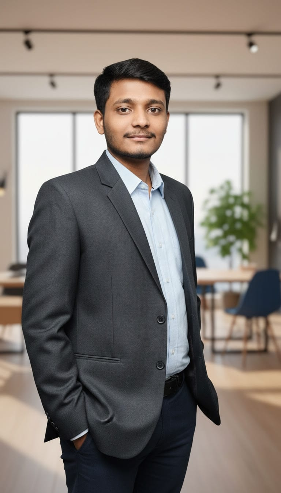

I am a driven Information Science and Engineering student at RV College of Engineering (RVCE), Bengaluru, with a strong foundation in problem-solving and system analysis. My academic journey began with a high distinction in my Diploma, where I secured a DCET rank of 92, fueling my transition into advanced engineering.
I am passionate about building scalable, efficient systems and am currently deepening my expertise in Data Structures, AI, and Cloud Architectures. Beyond the classroom, I apply my technical curiosity as a part-time contributor at EMBERQUEST Pvt. Ltd., where I gain hands-on industry experience. Whether I am optimizing a line of code or collaborating in a team, I am committed to leveraging technology to solve real-world challenges.
Collage : RV College of Engineering (RVCE), Bengaluru
Status : Successfully completed 3/8 semesters; currently advancing through Core Engineering Phase (Semester 4).
Notable Coursework :
Collage : DVS Polytechnic, Shivamogga
Achievement : Secured an All-State DCET Rank of 92, placing in the top 0.1% of candidates.
Core Competencies : Built a robust technical foundation in Core java, Python and SQL.
Foundation Excellence : Mastered the pillers of computing, including Operating System(OS), Computer Networks(CN) and Web Technologies(HTML/CSS).